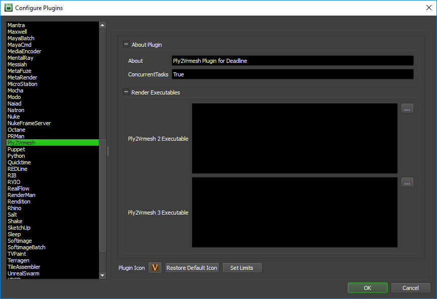

V-Ray Ply2Vrmesh¶
Job Submission¶
You can submit Ply2Vrmesh jobs from the Submit menu in the Monitor.
Submission Options¶
The general Deadline options are explained in the Job Submission documentation.
The Ply2Vrmesh specific options are:
Input Files: The file to be converted. If a sequence of files exist in the same folder, Deadline will automatically collect the range of the files and will set the Frame Range accordingly.
Output File (Optional): Optionally override the output file name. If left blank, the output name will be the same as the input name (with the vrmesh extension).
Frame List: The frames to render.
Version: The version of V-Ray’s Ply2Vrmesh to use.
Append: appends the information as a new frame to the .vrmesh file
Merge Output Files: Merge output files into a single file.
Conversion Options
Smooth Angle: A floating point number that specifies the angle (in degrees) used to distinguish if the normals should be smoothed or not. If present it automatically enables the -smoothNormals flag.
Smooth Normals: Generates smooth vertex normals. Only valid for .obj and .geo files; always enabled for .bin files.
Map Channel: Stores the UVW coordinates to the specified mapping channel (default is 1). Only valid for .obj and .geo files. When exporting a mesh that will be used in Maya, currently this must be set to 0 or the textures on the mesh will not render properly.
Disable Color Set Packing: Only valid for .geo and .bgeo files; disables the packing of float1 and float2 attributes in vertex color sets.
FPS: A floating-point number that specifies the frames per second at which a .geo or .bin file is exported, so that vertex velocities can be scaled accordingly. The default is 24.0.
Material IDs: Only valid for .geo files; assigns material IDs based on the primitive groups in the file.
Preview Faces: Specifies the maximum number of faces in the .vrmesh preview information. Default is 9973 faces.
Flip Normals: Reverses the face/vertex normals. Only valid for .obj, .geo and .bin files.
Faces Per Voxel: Specifies the maximum number of faces per voxel in the resulting .vrmesh file. Default is 10000 faces.
Flip Vertex Normals: Reverses the vertex normals. Only valid for .obj, .geo and .bin files.
Preview Hairs: Specifies the maximum number of hairs in the .vrmesh preview information. Default is 500 hairs.
Flip Face Normals: Reverses the face normals. Only valid for .obj, .geo and .bin files.
Segments Per Voxel: Specifies maximum segments per voxel in the resulting .vrmesh file. Default is 64000 hairs.
Flip YZ: Swap y/z axes. Needed for some programs i.e. Poser, ZBrush. Valid for .ply, .obj, .geo and .bin files.
Hair Width Multiplier: Specifies the multiplier to scale hair widths in the resulting .vrmesh file. Default is 1.0.
Flip Y Positive Z: Same as -flipYZ but does not reverse the sign of the z coordinate.
Preview Particles: Specifies the maximum number of particles in the .vrmesh preview information. Default is 20000 particles.
Flip X Positive Z: Same as -flipYPosZ but swaps x/z axes.
Particles Per Voxel: Specifies maximum particles per voxel in the resulting .vrmesh file. Default is 64000 particles.
Merge Voxels: Merge objects before voxelization to reduce overlapping voxels.
Particle Width Multiplier: Specifies the multiplier to scale particles in the resulting .vrmesh file. Default is 1.0.
Velocity Attr Name: Specifies the name of the point attribute which should be used to generate the velocity channel. By default the ‘v’ attribute is used.
VRSCENE Options
These settings are only enabled when the Input Files points to a .vrscene file.
Node Name: The name of the node within the
.vrscenefile that will be converted to a.vrmeshfile.Apply Transform: If enabled, the world-space transformation of the specified node in the
.vrscenewill be applied to the output.vrmeshfile.Velocity Channel: Generates velocity channel (used for motion blur).
Animation: Specifies whether to export an animation range from the
.vrscenefileStart Frame: Specifies the start frame of the animation export.
End Frame: Specifies the end frame of the animation export.
Plugin Configuration¶
You can configure the Ply2Vrmesh plugin settings from the Monitor. While in power user mode, select Tools -> Configure Plugins and select the Ply2Vrmesh plugin from the list on the left.
Render Executables
Ply2Vrmesh Executable: The path to the ply2vrmesh.exe executable file used for rendering. Enter alternative paths on separate lines. Different executable paths can be configured for each version installed on your render nodes.
FAQ¶
Which versions of Ply2Vrmesh are supported?
Ply2Vrmesh for V-Ray 2 and 3 are currently supported.
Error Messages and Meanings¶
This is a collection of known Ply2Vrmesh error messages and their meanings, as well as possible solutions. We want to keep this list as up to date as possible, so if you run into an error message that isn’t listed here, please visit the Thinkbox Help Centre and let us know.
Currently, no error messages have been reported for this plugin.

{kind=link}
{kind=link}
{kind=link}